字数：12197， 阅读时间：35分钟
石可破也，而不可夺坚；丹可磨也，而不可夺赤 ——《吕氏春秋·诚廉》
【前端工程化】系列文章链接：
- 【前端工程化】篇一 扬帆起航：开发环境
- 【前端工程化】篇二 白璧微瑕-包管理器
- 【前端工程化】篇三 席卷八荒-Webpack（基础）
- 【前端工程化】篇四 席卷八荒-Webpack（进阶）
- 【前端工程化】篇五 未来已来-Babel
- 【前端工程化】篇六 规矩方圆-ESLint
- 【前端工程化】篇七 沧海遗珠-其他工具
示例代码仓库：https://github.com/BWrong/dev-tools
声明：本篇文章基于webpack v4.43.0，如按照文中代码执行报错，请检查依赖模块版本是否和示例代码仓库中一致。
*温馨提示：*本篇内容更偏实战，涉及大量代码，如有代码密集恐惧症的老爷，请速速离场。
在上一篇的内容中，介绍了webpack的核心概念以及常用的核心配置，并尝试着配置了一个项目脚手架。那么接下来，就进入飞升环节——性能优化和实现原理。
锦上添花-优化
使用分析工具
优化如果没有数据量化做支撑，而仅仅凭感觉，都是扯淡的，所以在做优化前，有必要先来了解一些构建结果分析工具，用来获取相关的量化指标，为优化工作提供了方向和依据。
stats分析工具
stats分析工具是webpack官方提供的在线工具，使用方法如下：
- 生成
stat.json文件。
webpack --profile --json > stats.json
- 将
stat.json文件上传到stats分析工具页面中，即可得到分析结果。
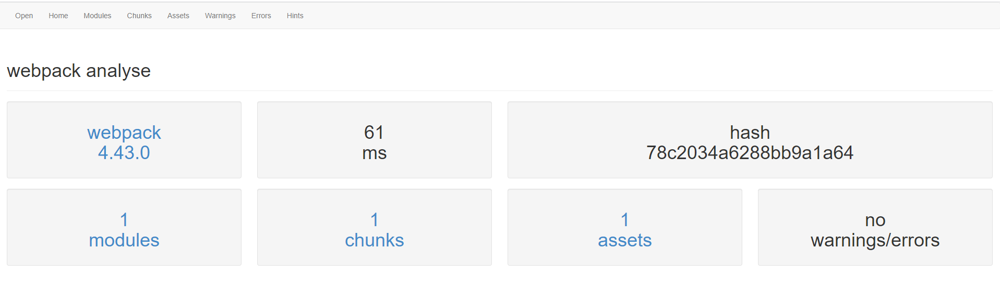
使用webpack-bundle-analyzer
除了官网提供的分析工具，社区还提供了一个更加好用的分析神器webpack-bundle-analyzer ，不仅界面美观，而且各个依赖包及其体积大小也更加直观。
npm install webpack-bundle-analyzer -D
// build/webpack.prod.conf.js
const merge = require('webpack-merge');
const BundleAnalyzerPlugin = require('webpack-bundle-analyzer').BundleAnalyzerPlugin;
const baseConfig = require('./webpack.base.conf.js');
module.exports = merge(baseConfig, {
mode: 'production',
plugins: [
new BundleAnalyzerPlugin(),
// ...
],
// ...
});
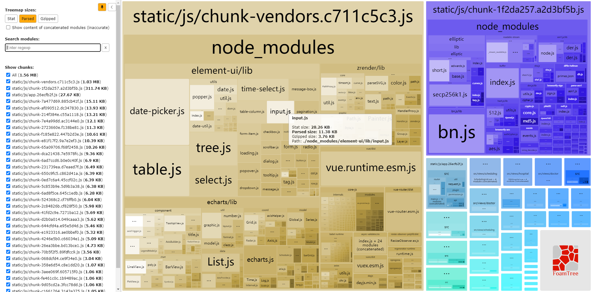
图里面我们可以查看Gzip和原始的打包结果，也可以看到每个chunk包含哪些包，以及它们的体积大小等信息。
速度分析
上面的两个工具均是侧重于打包结果的分析，重在优化打包品质。而通过 speed-measure-webpack-plugin 这个插件还可以实现对构建过程分析，从而优化构建效率，提升打包的体验。
npm i -D speed-measure-webpack-plugin
// build/webpack.prod.conf.js
const SpeedMeasurePlugin = require("speed-measure-webpack-plugin");
const smp = new SpeedMeasurePlugin();
const webpackConfig = {
// ...
}
module.exports = smp.wrap(webpackConfig) // 需要包裹原来的配置
现在就可以看到每个loader和plugin耗费的时间，以便对其进行优化。
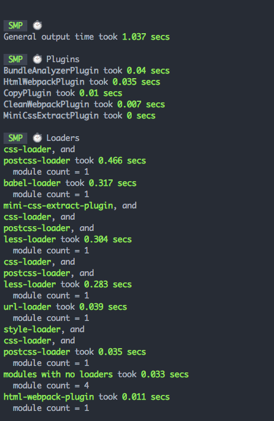
优化包品质
webpack4.0在mode设置为production时，其实已经默认做了很多优化手段来提升输出成果品质，不过了解一下还是有助于我们做一些更加深层次的优化。毕竟这些内容是直接关系到用户体验的，非常重要。
Tree shaking
Tree shaking 这个术语起源于 rollup，在webpack2.0正式版开始内置，可以检测到未使用的模块，以便将其剔除。它依赖于 ESModule 模块系统（其他模块系统不支持）中的静态结构特性，可以移除 JavaScript 上下文中的未引用代码，删掉未使用的代码，能够有效减少 JS 代码文件的大小。
Tree shaking这个名字非常形象，摇树-摇掉树上多余的东西。
// src/math.js
export function square(x) {
return x * x;
}
export function cube(x) {
return x * x * x;
}
// src/index.js
import { cube } from './math.js' // 仅引用了 cube 这个方法
console.log(cube(3))
上面的代码其实只是使用了cube，一般我们会希望未使用的代码（dead code）最好能够不包含到成果中。在新版的webpack中，在production的mode下，它会自动帮我们移除没有用到的代码，减少输出成果的体积。
在development的mode下，我们可以添加如下配置：
// build/webpack.dev.conf.js
module.exports = {
mode: 'development',
optimization: {
usedExports: true, // 不导出模块中未使用的代码
},
}
在进行此配置后，webpack会标识未使用的代码，然后在TerserPlugin执行压缩的时候移除那部分代码（没有额外的副作用）。
如果开发者需要自己来指定哪些模块没有副作用，可以使用另外一种方式（side effect），它可以配置在package.json的"sideEffects" 属性（主要针对一些库），也可以在 module.rules 配置选项 中设置 "sideEffects"。大概有如下几种情形：
- 如果所有代码都不包含有side effect的代码，直接将该属性标记为false，来告知 webpack，它可以安全地删除未用到的 export。
//package.json
{
"name": "your-project",
"sideEffects": false
}
- 如果代码中有部分文件有副作用，需标记
//package.json
{
"name": "your-project",
"sideEffects": [
"./src/some-side-effectful-file.js",
"*.css" // 一般css都是具有副作用的，需要在此声明
]
}
"side effect(副作用)" 的定义是，在导入时会执行特殊行为的代码，而不是仅仅暴露一个 export 或多个 export。举例说明，例如 polyfill，它影响全局作用域，并且通常不提供 export。
针对css也提供了相应的工具 PurgeCSS来去除未使用的代码，和tree shaking有异曲同工之妙。
代码分割
在单页应用（single-page application 简称为 SPA）当道的时代，我们不可能将所有的代码都打包在一个js文件中，也不可能在应用启动时一次性加载所有的js文件，否则长时间的白屏会让用户抓狂，大大影响用户体验。这时可以将代码进行分割，使其可以并行加载，也可以在不同的阶段（如不同路由）去加载所需的代码，这即是代码分割和按需加载。
webpack内置了非常强大的代码自动分割功能，也是它最引人注目的特性之一，如果合理使用，可以极大的提升应用加载时间。
常用的代码分离：
- 入口chunk分割：使用entry配置多个chunk，手动分离代码。
- 提取公用代码：
SplitChunksPlugin去重和分离 chunk。 - 动态导入与按需加载：通过模块中的内联函数调用来分离代码，目前推荐使用
import()语法。
入口chunk分割
最简单的分离方式就是在入口手动将代码分成不同的chunk。
// build/webpack.base.conf.js
module.exports = {
entry: {
app: '../src/index.js',
another: '../src/another-module.js'
},
output: {
filename: '[name].bundle.js',
path: path.resolve(__dirname, '../dist')
}
};
构建结果：
...
Asset Size Chunks Chunk Names
another.bundle.js 550 KiB another [emitted] another
index.bundle.js 550 KiB index [emitted] index
Entrypoint index = index.bundle.js
Entrypoint another = another.bundle.js
...
这种方式虽然简单，但是存在一些问题：
- 依赖开发者自己手动配置，不够智能。
- 如果每个入口chunk中均包含有某个模块，不会共享，而是会将该模块打包到各个 bundle 中。
模块去重
webpack内置了SplitChunksPlugin，可以很方便的把重复模块的提取成公共依赖，减少文件体积。而且将一些第三方依赖（一般不需要频繁变动）提取成公共依赖，也便于客户端做缓存，每次更新代码的时候，用户不需要重新下载这些没发生变化的模块。
// build/webpack.base.conf.js
module.exports = {
// ...
entry: {
app: '../src/index.js',
another: '../src/another-module.js'
},
output: {
filename: '[name].bundle.js',
path: path.resolve(__dirname, '../dist')
},
optimization: {
splitChunks: { // 添加此配置
chunks: 'all'
}
}
};
现在重新打包，app和another中共用的模块将会抽离到vender中，避免了产生重复的模块。
...
Asset Size Chunks Chunk Names
another.bundle.js 5.95 KiB another [emitted] another
index.bundle.js 5.89 KiB index [emitted] index
vendors~another~index.bundle.js 547 KiB vendors~another~index [emitted] vendors~another~index
Entrypoint index = vendors~another~index.bundle.js index.bundle.js
Entrypoint another = vendors~another~index.bundle.js another.bundle.js
...
chunk自动拆分是webpack4.0改进最大的功能， 如果同时满足以下条件，chunk 就会被拆分：
- 新的 chunk 被复用，或者来自 node_modules 目录。
- 新的 chunk 大于 30Kb(min+gzip前）。
- 按需加载 chunk 的并发请求数量小于等于 5 个。
- 页面初始加载时的并发请求数量小于等于 3 个。
splitChunks 官方默认配置如下，可以根据需要进行修改：
{
optimization: {
splitChunks: {
chunks: "async", // 对哪些模块优化，取值有"initial"(初始化值) | "all"(所有，推荐) | "async" (动态导入，默认) | 函数
minSize: 30000, // 最小尺寸，小于此值才会分割
minChunks: 1, // 最小 chunk ，包被引用几次以上才会分割
maxAsyncRequests: 5, // 按需加载的最大并行请求数， 默认5
maxInitialRequests: 3, // 最大的初始化加载次数，默认3
automaticNameDelimiter: '~', // 打包分隔符
name: true, // 拆分出来块的名字，默认由块名和 hash 值自动生成，此选项可接收 function
cacheGroups: { // 这里开始设置缓存的 chunks ，缓存组
vendors: {
test: /[\\/]node_modules[\\/]/,
priority: -10,
},
default: {
minChunks: 2,
priority: -20,
reuseExistingChunk: true,
}
}
}
}
}
动态导入与按需加载
webpack提供了两种方式进行动态导入代码。
require.ensure：早期遗留的方式。import()语法：ES规范中的动态导入模块方法（推荐）。
import()是ECMAScript 提案中的一个动态导入模块（异步方式）的方法，webpack在遇到此语法，会以引入的文件为入口单独生成一个chunk，并输出一个单独的bundle。代码执行时，并不会加载全部bundle，而是执行到某个import的文件时，才会去加载该bundle，这即是按需加载的流程。
按需加载也称为“懒加载”，是一种非常好的优化方式，可以大大提升应用的初始加载速度，也可以大大缩小用户加载文件的体积。
比如一个应用，有9个页面是管理员可以访问的，而普通用户只能访问其中的两个页面，如果不采用按需加载，那普通用户虽然只能访问两个页面，但是还是会加载所有页面依赖的文件，这是不合理的。
类似，下面这个页面不需要一开始就加载module.js，而只需在按钮被点击时才加载并执行其中的代码，可在浏览器开发者工具的network选项卡观察加载情况。
document.getElementById('my-button').onclick = function() {
import('./module.js').then(fn => {
fn.default && fn.default();
});
}
module.js和它内部依赖的文件就会单独生成一个bundle，并且是按需加载的。如果我们想控制输出bundle的名字，也可以指定chunk的名字，需要使用到webpack的魔法注释。
document.getElementById('my-button').onclick = function() {
import(/* webpackChunkName: "moduleA" */ './module.js').then(fn => { // 指定chunkName为moduleA
fn.default && fn.default();
});
}
提示：import()会返回一个promise，所以也可以使用async function优化链式写法。
document.getElementById('my-button').onclick = async function() {
const fn = await import(/* webpackChunkName: "moduleA" */ './module.js')
fn.default && fn.default();
}
**扩展：**除了webpackChunkName外，webpack还有另外两种魔法注释用来做模块的prefetch和preload，具体使用方法可以查看官方文档。
在实际项目中，代码分割也可以参考如下分离原则：
- 业务代码和第三方依赖分离
- 业务代码、业务公共代码和第三方依赖分离
- 首次加载和访问后加载的代码分离
开启Gzip
如果部署服务器开启了gzip，那么可利用compression-webpack-plugin生成gzip包，来减少加载时间。
npm i compression-webpack-plugin -D
// build/webpack.prod.conf.js
const CompressionWebpackPlugin = require('compression-webpack-plugin');
const productionGzipExtensions = ['js', 'css', 'json', 'txt', 'html','ico','svg'];
module.exports = {
plugins:[
new CompressionWebpackPlugin({
// 开启gzip压缩
algorithm: 'gzip', // 压缩算法
test: new RegExp('\\.(' + productionGzipExtensions.join('|') + ')$'),
threshold: 10240, // 仅处理大于此大小的资源（以字节为单位）
minRatio: 0.8 // 压缩比大于此值才处理
})
]
}
使用CDN
将一些第三方依赖改用CDN引入，也是常用的优化手段，因为一般第三方模块不会像业务代码一般频繁更新，使用CDN后，客户端会缓存这些资源，提升应用加载速度。不仅如此，这些依赖也不会参与构建过程（不会被打包进输出文件中），也可以提升构建速度。
// build/webpack.base.conf.js
module.exports = {
externals: {
'vue': 'Vue', // 配置需要排除的包名称
// ...
}
}
在js中还是使用import Vue from 'vue'即可，不过别忘了在html做引入。
<!-- public/index.html -->
<!DOCTYPE html>
<html lang="en">
<head>
<meta charset="UTF-8">
<title>app</title>
</head>
<body>
<div id="root">root</div>
<script src="https://cdn.jsdelivr.net/npm/vue@2.6.11"></script>
</body>
</html>
提升构建效率
随着业务发展，我们的项目规模可能越来越大，代码也会越来越多，就会进入改代码十秒钟，build十分钟的尴尬境地，加班什么的都不在话下。所以为了有更多的时间和女神约会，提升webpack构建效率就势在必行了。
提升webpack的构建效率本质就是让它少干点活，应该尽量避免让它去做一些不必要的事情。围绕这个方向，我们就可以动手搞事情了。
优化resolve解析规则
可以通过优化resolve下的解析规则来让webpack更加快速的定位到指定的模块，而不用做更多的匹配查询工作。
// build/webpack.base.conf.js
resolve: {
modules: [
path.resolve(__dirname, 'node_modules'), // 使用绝对路径明确指定 node_modules
],
// 减少后缀自动补全类型，减少自动匹配工作，缩短文件路径查询的时间，其他类型的文件需要在引入时指定后缀名
extensions: [".js"],
// 避免使用默认文件，而是必须使用完整的路径
mainFiles: ['index'],
},
缩小搜索范围
如，在loader规则配置时，使用一些规则（include，exclude等）来缩小模块的搜索范围，搜索和处理的文件少了，速度自然也就提升了。
// build/webpack.base.conf.js
module.exports = {
module: {
rules: [
{
test: /\.js$/,
include: path.resolve(__dirname, 'src'), // 仅仅搜索src下的文件，一般node_modules中的文件都已编译好，不需再处理，需要排除掉
loader: 'babel-loader'
}
]
}
};
精简loader/plugin
每个loader/plugin都是需要消耗构建时间的，尽量减少冗余或者不必要的工具和配置，在选择这些工具时也尽量选择一些性能好一点的。
使用DLLPlugin
DLLPlugin 是 webpack 官方提供的一个插件，使用 DllPlugin 为更改不频繁的代码(如vue、react等第三方模块)生成单独编译结果缓存下来，后续构建直接使用这些文件，避免重复构建。这样可以显著提高应用程序的编译速度。
需要先利用webpack内置插件DLLPlugin生成资源动态链接库，然后再使用DLLReferencePlugin将对应资源映射到这些动态链接库就可以了，不过这样配置还是比较复杂的。
我们可以选择 AutoDllPlugin，它整合了上述两个插件的功能，而配置比较简单。
npm install --save-dev autodll-webpack-plugin
// build/webpack.base.conf.js
plugins: [
//...
new AutoDllPlugin({
inject: true,
filename: '[name].js',
entry: {
vendor: [
'vue'
]
}
})
]

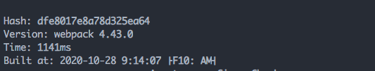
可以看到两次打包时间差别还是挺大的，确实比较有效，目前示例项目模块较少，在大项目效果应该更加显著。
小即是快
使用数量更少/体积更小的 library，如将momentJS换成dayJS，减少编译结果的整体大小，以提高构建性能。尽量保持 chunk 体积小。
- 使用数量更少/体积更小的 library。
- 在多页面应用程序中使用
SplitChunksPlugin。 - 在多页面应用程序中使用
SplitChunksPlugin，并开启async模式。 - 移除未引用代码。
- 只编译你当前正在开发的那些代码。
持久化缓存
使用 cache-loader为某些耗费性能的loader启用持久化缓存，可以减少重新构建文件的数量，能有效提升构建速度。
npm install cache-loader -D
// build/webpack.base.conf.js
module.exports = {
module: {
rules: [{
test: /\.jsx?$/,
use: ['cache-loader','babel-loader'] // 仅需将cache-loader放在需要缓存的loader前面就行了
}]
}
}
**提示：**某些loader本身是支持配置cache的，可选择使用loader自带的缓存功能。如给babel-loader的cacheDirectory配置缓存路径（true或者不设置路径则使用默认路径node_modules/.cache/babel-loader），即可开启缓存。
除了使用loader外，一些插件也可以提供缓存功能，如HardSourceWebpackPlugin 。
因为缓存需要将文件写入到磁盘，而文件写入也是有开销的，所以好钢要用在刀刃上，建议仅对比较耗费性能的loader开启。
webpack5.0已经内置了持久缓存方案，能够有效提升构建速度。
因地制宜
针对不同环境选择合适的配置，如设置合适的devtool（source-map），开发环境不进行代码压缩优化等。
开启多进程
thread-loader 可以管理多个进程，可将非常消耗资源的 loader 分配给一个 worker进程，从而减少主进程的性能开销。
npm install thread-loader -D
// build/webpack.base.conf.js
module.exports = {
module: {
rules: [
{
test: /\.jsx?$/,
use: ['thread-loader', 'babel-loader'] // 仅需在对应的loader前面添加thread-loader即可
}
]
}
}
不要使用太多的 worker，因为 Node.js 的 runtime 和 loader 都有启动开销。要最小化 worker 和 main process(主进程) 之间的数据传输，因为进程间通讯(IPC, inter process communication)也是非常消耗资源的。
除了
thread-loader，HappyPack也可以开启多进程，不过配置更加复杂一点，因为不再维护，固不推荐使用。现在webpack内置JS压缩使用了TerserWebpackPlugin，本身已开启多进程，固不再需要手动开启。
除了以上手段，webpack和nodeJS每个版本迭代也会大幅提升性能，及时升级工具也是提升构建效率的有效手段。更多的性能优化手段可以查看官方文档-构建性能。
修炼内功-原理
工作原理
运行流程
webpack运行流程是串行方式的，大致如下：
- 初始化参数：从配置文件和 Shell 语句中读取与合并参数配置，得出最终的参数配置；
- 开始编译：用上一步得到的参数配置初始化 Compiler 对象，加载所有配置的插件，执行对象的 run 方法开始执行编译；
- 确定入口：根据配置中的 entry 找出所有的入口文件；
- 编译模块：从入口文件出发，调用所有配置的 Loader 对模块进行翻译，再找出该模块依赖的模块，再递归本步骤。直到所有入口依赖的文件都经过了本步骤的处理；
- 完成模块编译：在经过第4步使用 Loader 翻译完所有模块后，得到了每个模块被翻译后的最终内容以及它们之间的依赖关系；
- 输出资源：根据入口和模块之间的依赖关系，组装成一个个包含多个模块的 Chunk，再把每个 Chunk 转换成一个单独的文件加入到输出列表，这步是可以修改输出内容的最后机会；
- 输出完成：在确定好输出内容后，根据配置确定输出的路径和文件名，把文件内容写入到文件系统。
提示：在以上的过程中，webpack会在特定的时机广播出对应的事件，方便触发插件中监听了这些事件的钩子运行。
看似流程较多，我们可以精简一下：
-
初始化：启动构建，读取与合并配置参数，加载 Plugin，实例化 Compiler。
-
编译：从 Entry 发出，针对每个 Module 串行调用对应的 Loader 去翻译文件内容，再找到该 Module 依赖的 Module，递归地进行编译处理。
-
输出：对编译后的 Module 组合成 Chunk，把 Chunk 转换成文件，输出到文件系统。

参考资料：webpack工作原理概括
实现一个简单的webpack
俗话说：读万卷书不如行万里路，讲再多的原理都不如敲敲代码来得实在。下面我们就一步一步实现一个简单的打包器。
准备工作
创建一个项目，包含如下文件及文件夹：
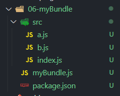
// /src/index.js
import a from './a.js';
console.log(a);
// /src/a.js
import b from './b.js';
const a = `b content: ${b}`;
export default a;
// /src/b.js
const b = 'Im B';
export default b;
现在这样的代码在不支持ESModule的浏览器是不能运行的，需要使用打包器进行转换才行，马上开撸。
实现模块打包
在开撸前，我们明确下打包的目标和流程：
- 找到项目入口（即
/src/index.js），并读取其内容； - 分析入口文件内容，递归寻找其依赖，生成依赖关系图；
- 根据生成的依赖关系图，编译并生成最终输出代码
/myBundle.js即为我们的打包器，所有相关的代码也将写在其中，下面开始吧！
1. 获取模块内容
读取入口文件的内容，这个很简单，我们创建一个方法getModuleInfo，使用fs来读取文件内容：
// myBundle.js
const fs = require('fs')
const getModuleInfo = file => {
const content = fs.readFileSync(file, 'utf-8')
console.log(content)
}
getModuleInfo('./src/index.js')
毫无疑问，这里会输出index.js文件的内容，不过它是一堆字符串，我们如何才能知道它依赖了哪些模块呢？有如下两种方式：
- 正则：通过正则匹配'import'关键字来获取相应的文件路径，不过太麻烦了，还不可靠，万一代码里面有个字符串也有这些内容呢？
- babel：可以通过
@babel/parser来将代码转换成AST（抽象语法树，Abstract Syntax Tree, 简称AST），再来分析AST查找依赖。看起来这种比较靠谱。
毫无疑问，使用第二种方式。
npm i @babel/parser ## 安装 @babel/parser
// myBundle.js
const fs = require('fs')
const parser = require('@babel/parser')
const getModuleInfo = file => {
const content = fs.readFileSync(file, 'utf-8')
const ast = parser.parse(content, {
sourceType: 'module' // 解析ESModule须配置
})
console.log(ast)
console.log(ast.program.body)
}
getModuleInfo('./src/index.js')
转换结果如下，可以看到一共两个节点，type属性标识了节点的类型，ImportDeclaration即对应了import语句，而其source.value即是引入模块的相对路径。想要的数据都有，是不是很赞！
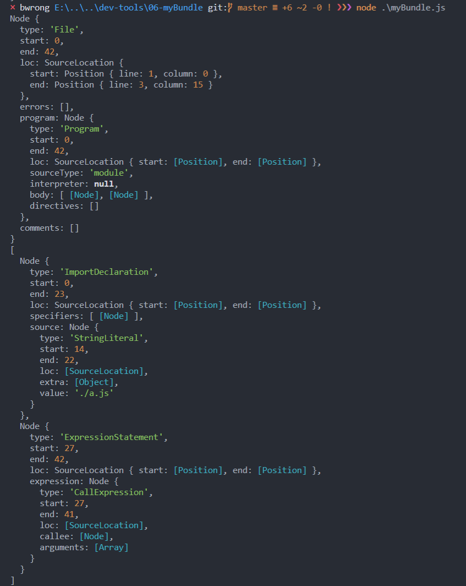
2. 生成依赖关系表
有了上一步的数据，我们需要将它们生成一份结构化的依赖表，方便后续对代码处理。
其实就是遍历ast.program.body，将其中的ImportDeclaration类型的节点提取出来，并存入依赖表。
这里也不需要自己手动实现细节，直接使用@babel/traverse即可。
npm i @babel/traverse ## 安装@babel/traverse
getModuleInfo方法做如下修改：
// myBundle.js
const fs = require('fs')
const path = require('path')
const parser = require('@babel/parser')
const traverse = require('@babel/traverse').default
const getModuleInfo = (file) => {
const content = fs.readFileSync(file, 'utf-8');
const ast = parser.parse(content, {
sourceType: 'module'
});
const dependencies = {}; // 用于存储依赖
traverse(ast, {
ImportDeclaration({ node }) { // 只处理ImportDeclaration类型的节点
const dirname = path.dirname(file);
const newFile = '.'+ path.sep + path.join(dirname, node.source.value); // 此处将相对路径转化为绝对路径，
dependencies[node.source.value] = newFile;
}
});
console.log(dependencies);
};
getModuleInfo('./src/index.js')
输出结果如下：
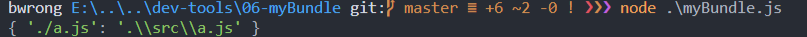
接下来我们就可以返回一个完整的模块信息了。
在这里，我们顺便通过babel的工具（``@babel/core，@babel/preset-env`）将代码转换成ES5的语法。
npm i @babel/core @babel/preset-env ## 安装@babel/core @babel/preset-env
// myBundle.js
const fs = require('fs');
const path = require('path');
const parser = require('@babel/parser');
const traverse = require('@babel/traverse').default;
const babel = require('@babel/core');
const getModuleInfo = (file) => {
const content = fs.readFileSync(file, 'utf-8');
const ast = parser.parse(content, {
sourceType: 'module'
});
const dependencies = {};
traverse(ast, {
ImportDeclaration({ node }) {
const dirname = path.dirname(file);
const newFile = '.'+ path.sep + path.join(dirname, node.source.value);
dependencies[node.source.value] = newFile; // 使用文件相对路径为key，绝对路径为value
}
});
const { code } = babel.transformFromAst(ast, null, {
presets: ['@babel/preset-env']
});
const moduleInfo = { file, dependencies, code };
console.log(moduleInfo);
return moduleInfo;
};
getModuleInfo('./src/index.js');
输出如下：
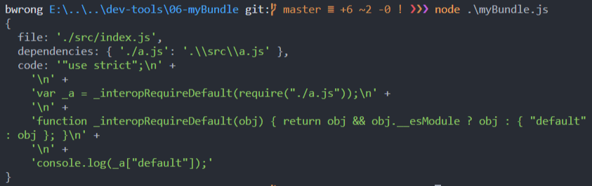
现在，模块的代码就已经转换成了一个对象，包含模块的绝对路径、依赖以及被babel转换后的代码，不过上面只处理了index.js的依赖，a.js的依赖并没有进行处理，所以并不是一份完整的依赖表，我们需要进一步处理。
其实也很简单，就是从入口开始，每个模块及其依赖都调用一下getModuleInfo方法进行分析，最终就会返回一个完整的依赖表(也有人叫依赖图，dependency graph)。
我们直接新写一个方法来处理：
// myBundle.js
const generDepsGraph = (entry) => {
const entryModule = getModuleInfo(entry);
const graphArray = [ entryModule ];
for(let i = 0; i < graphArray.length; i++) {
const item = graphArray[i];
const { dependencies } = item;
if(dependencies) {
for(let j in dependencies) {
graphArray.push(
getModuleInfo(dependencies[j])
);
}
}
}
const graph = {};
graphArray.forEach(item => {
graph[item.file] = {
dependencies: item.dependencies,
code: item.code
};
});
return graph;
};
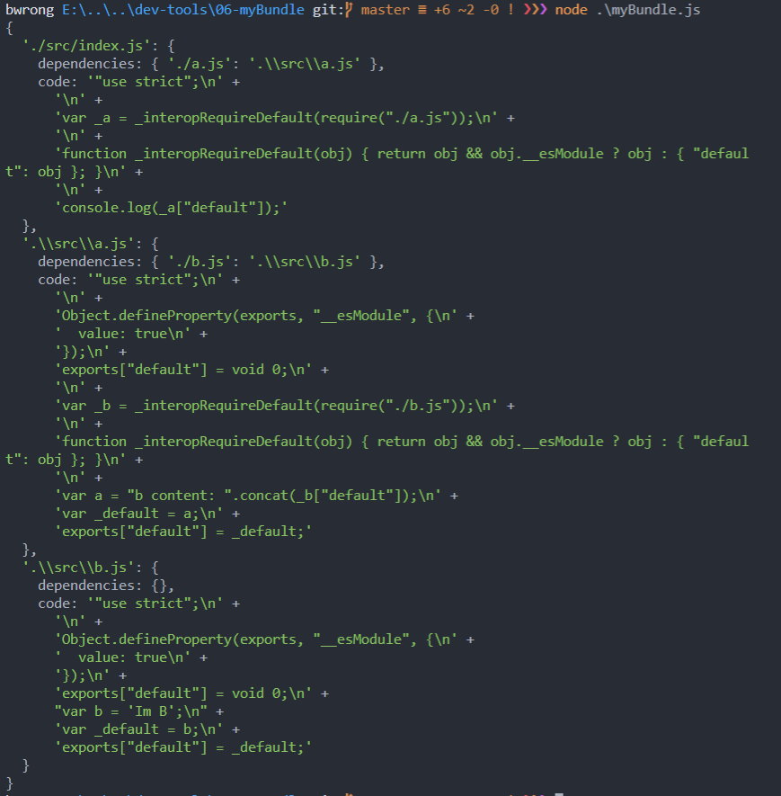
现在，我们就生成一份完整的依赖表了，接下来，就可以根据这份数据来生成最终的代码了。
3.生成输出代码
在生成代码前，我们先观察一下上面的代码，可以发现里面包含了export和require这样的commonjs的语法，而我们的运行环境（这里是浏览器）是不支持这种语法的，所以还需要自己来实现一下这两个方法。先贴上代码，再慢慢道来：
新建一个build方法，用来生成输出的代码。
// myBundle.js
const build = (entry) => {
const graph = JSON.stringify(generDepsGraph(entry));
return `
(function(graph){
function require(module) {
var exports = {};
return exports;
};
require('${entry}')
})(${graph});
`;
};
const code = build('./src/index.js');
说明：
- 第三行
JSON.stringify是将数据字符串化，否则在下面的立即执行函数中接收到的将是[object object]，因为下面是在字符串模板中使用，会发生类型转换。 - 返回的代码包裹在IIFE（立即执行函数）中是防止模块间作用域相互污染。
require函数需要定义在输出的内容中，而不是当前的运行环境中，因为它会在生成的代码中执行。
接下来，我们需要拿到入口文件的code，并使用eval函数来执行它：
// myBundle.js
const build = (entry) => {
const graph = JSON.stringify(generDepsGraph(entry));
return `
(function(graph){
function require(module) {
var exports = {};
(function(require, exports, code){
eval(code)
})(require, exports, graph[module].code);
return exports;
};
require('${entry}')
})(${graph});
`;
};
const code = build('./src/index.js');
console.log(code);
说明：
- 为了防止code中的代码和我们这里（return的字符串中）作用域有冲突，我们还是使用IIFE包裹，并将需要的参数传递进去。
graph[module].code可以从上面的依赖表中获取到入口的代码。
输出如下：
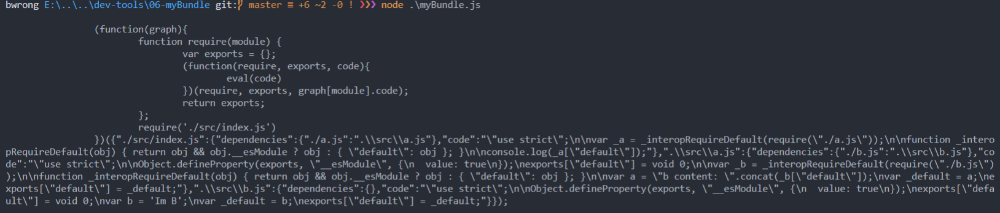
这就是打包的成果了，不过先不要高兴过头了，这里还有一个大坑。
我们现在生成的代码中引入模块的方式都是基于'index.js'的相对路径，如果在其他模块引入的模块路径和相较于index.js不一致的时候，对应的模块就会找不到(路径不正确)，所以我们还要处理一下模块的路径。好在前面依赖表的dependencies属性里面记录了模块的绝对路径，只需要拿出来使用即可。
添加一个localRequire函数，用来从dependencies中获取模块绝对路径。
// myBundle.js
const build = (entry) => {
const graph = JSON.stringify(generDepsGraph(entry));
return `
(function(graph){
function require(module) {
function localRequire(relativePath) {
return require(graph[module].dependencies[relativePath]);
}
var exports = {};
(function(require, exports, code){
eval(code)
})(localRequire, exports, graph[module].code);
return exports;
};
require('${entry}')
})(${graph});
`;
};
接下来，将输出的代码写入到文件就可以了。
// myBundle.js
const code = build('./src/index.js')
fs.mkdirSync('./dist')
fs.writeFileSync('./dist/bundle.js', code)
最后，在html中引入一下，测试一下是否能够正常运行。没有疑问，肯定是可以正常运行的。:smile::smile:
最后贴一下完整的代码： :cow::beers:
// myBundle.js
const fs = require('fs');
const path = require('path');
const parser = require('@babel/parser');
const traverse = require('@babel/traverse').default;
const babel = require('@babel/core');
const getModuleInfo = (file) => {
const content = fs.readFileSync(file, 'utf-8');
const ast = parser.parse(content, {
sourceType: 'module'
});
const dependencies = {};
traverse(ast, {
ImportDeclaration({ node }) {
const dirname = path.dirname(file);
const newFile = '.'+ path.sep + path.join(dirname, node.source.value);
dependencies[node.source.value] = newFile;
}
});
const { code } = babel.transformFromAst(ast, null, {
presets: ['@babel/preset-env']
});
const moduleInfo = { file, dependencies, code };
return moduleInfo;
};
const generDepsGraph = (entry) => {
const entryModule = getModuleInfo(entry);
const graphArray = [ entryModule ];
for(let i = 0; i < graphArray.length; i++) {
const item = graphArray[i];
const { dependencies } = item;
if(dependencies) {
for(let j in dependencies) {
graphArray.push(
getModuleInfo(dependencies[j])
);
}
}
}
const graph = {};
graphArray.forEach(item => {
graph[item.file] = {
dependencies: item.dependencies,
code: item.code
};
});
return graph;
};
const build = (entry) => {
const graph = JSON.stringify(generDepsGraph(entry));
return `
(function(graph){
function require(module) {
function localRequire(relativePath) {
return require(graph[module].dependencies[relativePath]);
}
var exports = {};
(function(require, exports, code){
eval(code)
})(localRequire, exports, graph[module].code);
return exports;
};
require('${entry}')
})(${graph});
`;
};
const code = build('./src/index.js');
fs.mkdirSync('./dist');
fs.writeFileSync('./dist/bundle.js', code);
在完成这个案例之前，webpack就像一位高贵的美人，让人敬而远之。而通过这个案例，我们撕下了她神秘的外衣，发现里面原来如此美妙，是不是美不胜收。当然实际不能如此简单，要去处理各种边界情况，还要支持loader和plugin，美人还是有点东西的😍。
聊聊模块热替换
之所以在这里单独列出了模块热替换（HMR），是因为一直觉得这是一个很酷的功能，犹如黑魔法一般的存在。
优势何在
模块热替换简称为 HMR(Hot Module Replacement)，能大大提升开发体验，是非常实用的一个功能。在这之前，用得比较多的是live-reload，在编辑器和浏览器安装对应的插件后，当编辑器保存的时候，浏览器会进行页面刷新，其实相比手动F5也算比较方便了。不过它只能采用整页刷新，所以存在一些缺陷：
- 效率低，整页刷新意味着所有资源将重新加载，速度可想而知。
- 如果页面中的状态未采用持久化，刷新后状态将会重置丢失。
在gulp流行的时候，用得比较多的是一个叫BrowserSync的插件，可以同时在多个设备打开多个浏览器，点击和滚动操作在所有浏览器上都会同步，也算是比较好用的一个工具。这里它不是主角，不做介绍。
webpack的HMR是在应用运行时，尽量在重载整个页面的前提下动态替换、添加或删除模块，相比以往的工具，它有以下优势：
- 更新页面内容的时候不会丢失应用的状态（不是绝对的，取决于模块的影响范围）。
- 只更新有变更的内容，而不是整页重载，快速和高效。
运行原理
前面已经介绍了如何使用模块热替换，所以这里不会再赘述用法，仅仅简单了解一下相关概念即可。
Manifest
首先需要了解一下Manifest，它是webpack维护的一份用于管理构建过程中所有模块及关联关系的数据表，包含了各个模块之间的依赖关系、模块内容等详细信息，是webpack解析和加载模块的重要依据。
更新流程

上图是webpack 配合 webpack-dev-server 进行应用开发的模块热更新流程图，记录了完整的更新流程。
- 上图底部红色框内是服务端，而上面的橙色框是浏览器端。
- 绿色的方框是 webpack 代码控制的区域。蓝色方框是 webpack-dev-server 代码控制的区域，洋红色的方框是文件系统，文件修改后的变化就发生在这，而青色的方框是应用本身。
上图显示了修改代码到模块热更新完成的一个周期（步骤已使用序号标出），流程如下：
- webpack 对文件系统进行 watch 打包到内存中。在 webpack 的 watch 模式下，文件系统中某一个文件发生修改，webpack 监听到文件变化，根据配置文件对模块重新编译打包，并将打包后的代码通过简单的 JavaScript 对象保存在内存中（文件写在内存中，速度更快，性能更高，使用memory-fs工具完成）。
- webpack-dev-server 和 webpack 之间的接口交互。而在这一步，主要是 dev-server 的中间件 webpack-dev-middleware 和 webpack 之间的交互，webpack-dev-middleware 调用 webpack 暴露的 API对代码变化进行监控，并且告诉 webpack，将代码打包到内存中。
- webpack-dev-server 对文件变化的一个监控。这一步不同于第一步，并不是监控代码变化重新打包。当我们在配置文件中配置了devServer.watchContentBase 为 true 的时候，Server 会监听这些配置文件夹中静态文件的变化，变化后会通知浏览器端对应用进行 live reload。注意，这儿是浏览器刷新，和 HMR 是两个概念。
- webpack-dev-server 代码的工作。该步骤主要是通过 sockjs（webpack-dev-server 的依赖）在浏览器端和服务端之间建立一个 websocket 长连接，将 webpack 编译打包的各个阶段的状态信息告知浏览器端，同时也包括第三步中 Server 监听静态文件变化的信息。浏览器端根据这些 socket 消息进行不同的操作。当然服务端传递的最主要信息还是新模块的 hash 值，后面的步骤根据这一 hash 值来进行模块热替换。
- webpack-dev-server/client 端并不能够请求更新的代码，也不会执行热更模块操作，而把这些工作又交回给了 webpack，webpack/hot/dev-server 的工作就是根据 webpack-dev-server/client 传给它的信息以及 dev-server 的配置决定是刷新浏览器呢还是进行模块热更新。当然如果仅仅是刷新浏览器，也就没有后面那些步骤了。
- HotModuleReplacement.runtime 是客户端 HMR 的中枢，它接收到上一步传递给他的新模块的 hash 值，它通过 JsonpMainTemplate.runtime 向 server 端发送 Ajax 请求，服务端返回一个 json，该 json 包含了所有要更新的模块的 hash 值，获取到更新列表后，该模块再次通过 jsonp 请求，获取到最新的模块代码。这就是上图中 7、8、9 步骤。
- 而第 10 步是决定 HMR 成功与否的关键步骤，在该步骤中，HotModulePlugin 将会对新旧模块进行对比，决定是否更新模块，在决定更新模块后，检查模块之间的依赖关系，更新模块的同时更新模块间的依赖引用。
- 最后一步，当 HMR 失败后，回退到 live reload 操作，也就是进行浏览器刷新来获取最新打包代码。
如上就是热更新的过程，当然这只是webpack所做的工作，此时业务代码中并不能知道代码是否发生变化，我们必须使用前面提到的accept方法来进行监听，并实现对应的变化相应操作。
if(module.hot) { // 先判断是否开启HMR
module.hot.accept('./xxx.js', function() {
// do something
})
}
提示：accept方法内容一般不用自己实现，很多工具（如vue-loader，style-loader）内部已提供，直接使用即可。
参考资料：Webpack HMR 原理解析，了不起的 Webpack HMR 学习指南。
开发loader
webpack官方和社区已经提供了非常多的loader，正常来说，常用的文件解析都可以找到现成的loader。不过，来了解一下如何开发loader，有助于自己对loader工作原理的理解，而且在有需求的时候，也可以自己撸一个loader。
开发一个简单的loader
其实自定义一个loader非常简单，本质上loader即是一个函数，接收参数并对其进行处理，而后返回处理结果（须为buffer或string）。
- 新建
/loaders/replaceLoader.js，
// /loaders/replaceLoader.js
module.exports = function (source) {
source = source.replace(/webpack/gi, 'world'); // 将源文件中的webpack替换成world
return source;
};
- 新建
/src/index.js
// /src/index.js
console.log('hello webpack');
- 配置webpack
接下来，有必要先了解下如何来配置上面的loader。一般第三方的loader，安装了都在node_modules下面，webpack会从此处去找，但是现在loader在/loaders/testLoader.js，所以需要做些处理，有如下几种方式：
- 直接require对应的loader（适用于单个loader）
// webpack.config.js
module: {
rules: [
{
test: /\.js$/,
exclude: /node_modules/,
loader: path.resolve('./loaders/replaceLoader.js')
}
]
}
- 使用
resolveLoader配置项（适用于多个loader）
// webpack.config.js
module: {
rules: [
{
test: /\.js$/,
exclude: /node_modules/,
use:'replaceLoader'
}
]
},
resolveLoader: {
modules: ['node_modules', path.resolver(__dirname, 'loaders')] // 查找优先级从左到右
}
- 如果准备将loader发布到npm，也可以使用 npm-link。
这里，采用第二种方式，完整配置如下：
// webpack.config.js
const path = require('path');
module.exports = {
mode:'development',
entry: './src/index.js',
output: {
filename: 'bundle.js',
path: path.resolve(__dirname, 'dist')
},
resolveLoader: {
modules: ['node_modules', path.resolve(__dirname, 'loaders')]
},
module: {
rules: [{
test: /\.js$/,
use:'replaceLoader'
}]
}
};
运行一下，打包命令npx webpack，可以看到输出文件中的webpack被替换成了world。
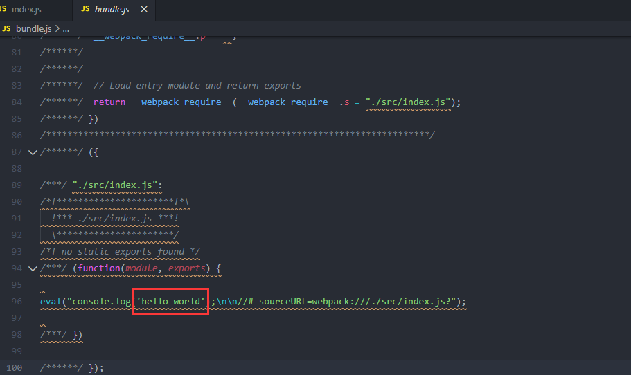
一般loader都会提供配置项(options)，方便用户做个性配置，可以通过this.query获取配置内容，不过一般使用官方推荐的loader-utils 工具更加便捷。
// webpack.config.js
const path = require('path');
module.exports = {
mode:'development',
entry: './src/index.js',
output: {
filename: 'bundle.js',
path: path.resolve(__dirname, 'dist')
},
resolveLoader: {
modules: ['node_modules', path.resolve(__dirname, 'loaders')]
},
module: {
rules: [{
test: /\.js$/,
use: {
loader:'replaceLoader',
options: {
src: /webpack/ig, // 配置要替换的内容
to: 'world!' // 配置替换的目标内容
}
}
}]
}
};
修改一下replaceLoader：
// /loaders/replaceLoader.js
const loaderUtils = require('loader-utils');
module.exports = function (source) {
const options = loaderUtils.getOptions(this);
source = source.replace(options.src, options.to);
return source;
};
**注意：**这里使用了this，this提供了很多有用的信息，所以不能使用箭头函数（会改变this指向）。如果需要对options进行校验，可以使用schema-utils。
复杂的情况
至此，一个简单的loader就实现了，当然有时候可能会更加复杂。
其实，loader函数会接收三个参数：content、map、meta
- content：模块内容，可以是字符串或者buffer
- map：sourcemap 对象
- meta：一些元数据信息
如果仅仅是返回处理结果，直接返回content即可。但如果需要生成sourcemap 对象、meta元数据或者抛出异常，需要将return换成this.callback(err, content, map, meta)来传递数据。
this.callback(
// 当无法转换原内容时，给 Webpack 返回一个 Error
err: Error | null,
// 原内容转换后的内容
content: string | Buffer,
// 用于把转换后的内容得出原内容的 Source Map，方便调试
sourceMap?: SourceMap,
// 如果本次转换为原内容生成了 AST 语法树，可以把这个 AST 返回，
// 以方便之后需要 AST 的 Loader 复用该 AST，以避免重复生成 AST，提升性能
abstractSyntaxTree?: AST
);
另外，loader也是支持异步任务处理的，可以借助this.async()实现。
// /loaders/replaceLoader.js
const loaderUtils = require('loader-utils');
module.exports = function (source) {
const options = loaderUtils.getOptions(this);
const asyncfunc = this.async() // 调用异步func
setTimeout(() => {
source = source.replace(options.src, options.to);
asyncfunc(null, source) // 传递结果
}, 200)
};
关于loader的开发，官方提供了很多api，读者可以查阅 loader interface 了解。
注意事项
- loader要遵循职责单一原则，一个loader只做一种转换，如果需要对源文件进行多次转换处理，则需要多个loader来实现。
- 调用多个loader来处理一个文件时，默认情况下loader会从后到前链式顺序执行，最后一个loader将会拿到文件的原始内容，处理后会将结果传递给下一个loader继续处理，直到最前面的loader处理完成返回给webpack。
开发plugin
plugin是webpack中非常重要的部分，它赋予了webpack强大的扩展能力。和loader不同的是loader主要是为了让webpack能够解析更多类型的文件，而plugin则可以参与打包过程中每个阶段。从使用方式我们可以看出plugin其实就是一个类，在调用构造函数的时候传入配置参数。
**注意：**下面使用的是webpack4.0版本，相比3.0的api是不一样的。
开发一个简单的plugin
自定义plugin的引入方式相比loader来说，非常简单：
// webpack.config.js
const path = require('path')
const TestWebpackPlugin = require('./test-webpack-plugin')
module.exports = {
mode: 'development',
entry: './src/index.js',
output: {
path: path.resolve(__dirname, 'dist'),
filename: '[name]_[hash].js'
},
plugins: [
new TestWebpackPlugin({
// ...options
})
]
}
webpack的plugin命名需要遵循
插件名字-webpack-plugin的格式。
而plugin内部的实现也是比较简单的，由以下几部分组成：
- 一个可以通过new调用的类函数
- 在该函数的
prototype上定义一个apply方法，参数为compiler - 在
apply方法中注册要监听的钩子名称、插件名称、回调函数 - 在回调函数中通过注入的参数，读取或操纵修改 Webpack 内部实例数据
- 异步类型的事件钩子，插件处理完成需要调用
callback或者返回promise
// test-webpack-plugin.js
class TestWebpackPlugin {
constructor (options) {
// 在这里获取插件配置
}
// Webpack 会调用此 apply 方法并传入 compiler 对象
apply (compiler) {
// 这里可以在compiler的钩子（hook）上注册一些方法， 当webpack执行到特定的钩子时就会执行该阶段注册的方法
compiler.hooks.done.tap('TestWebpackPlugin', (stats) => {
console.log('Hello TestWebpackPlugin!');
// ...
})
// 在emit钩子上注册一个处理函数，因为该钩子为异步的，所以需要使用tapAsync
// emit钩子执行时机在资源输出到output之前
compiler.hooks.emit.tapAsync('TestWebpackPlugin', (compilation, cb) => {
// 在输出文件中增加一个文件test.js
compilation.assets['test.js'] = {
source() { // 文件内容
return 'console.log("hello world")'
},
size() { // 文件的长度
return 27;
}
};
cb(); // 处理完成调用cb
})
}
}
module.exports = TestWebpackPlugin
执行流程
plugin内部核心就是apply，使用插件的时候，webpack会自动调用插件实例的apply方法，并将compiler作为参数传入。在apply内部，我们可以在compiler的hooks中特定的钩子上注册各种监听函数（发布订阅模式），当webpack执行到这些钩子的时候，就会调用对应的监听函数，从而实现对构建流程的处理。
下面我们以前面例子来了解插件具体的执行流程：
-
通过
<instance>.hooks.<hook name>.<tap API>('<plugin name>', callback )方式来进行hooks事件注册。instance：compiler或compilation实例hook name：挂载目标钩子的名称- 处理钩子可能是同步，也可能是异步的，需要使用根据不同情况选择使用的
tap API，tap API有三种： tap用于挂载一个同步回调，适合任何事件钩子类型，使用回调返回结果。tapAsync用于挂载一个异步回调，不能对同步类型钩子使用，回调中会注入callback参数供插件处理完操作后调用，如果不调用callback交回流程控制权，将无法继续进行后续操作。tapPromise和tapAsync的作用和限制类似，不同在于要求返回一个Promise实例，并且这个Promise一定会被决议（无论 resolve 或 reject ）
// 同步
compiler.hooks.done.tap('MyPlugin', (stats, callback) => {
// ...
callback()
})
// 异步promise
compiler.hooks.emit.tapPromise('MyPlugin', (compilation) => {
return new Promise((resolve, reject) => {
// ...
})
})
// 异步async function
compiler.hooks.emit.tapPromise('MyPlugin', async (compilation) => {
await new Promise((resolve, reject) => {
// ...
})
})
// 异步回调
compiler.hooks.emit.tapAsync('MyPlugin', (compilation, callback) => {
// ...
callback()
})
-
在钩子上注册的函数，接收两个参数，第一个为插件的名字，第二个为回调函数
- 这个回调函数即为处理函数的主要内容，接收的参数由钩子决定，这里的
emit钩子接收两个参数（分别是compilation, cb），compilation记录了本次打包的相关内容，cb回调函数在处理完成进行调用交回控制权。
- 这个回调函数即为处理函数的主要内容，接收的参数由钩子决定，这里的
-
compilation.assets保存了本次打包出来的所有的文件信息，上面的例子即往assets中新增了一个test.js文件（前提是添加之前，assets中没有与该文件同名的文件），source和size分别设置了文件的内容和长度。如果是对文件进行处理，直接对assets中的文件进行操作即可。 -
compilation上也可以注册钩子, 即存在Compiler Hooks和Compilation Hooks两种。
compiler.hooks.compilation.tap('MyPlugin', (compilation) => {
compilation.hooks.optimizeChunkAssets.tapAsync(
'MyPlugin',
(chunks, callback) => {
// 处理chunks
// 结束调用callback方法
callback();
}
);
})
hooks
除了上述的emit钩子，webpack还提供了许多其他的钩子，覆盖到打包的各个阶段。
entryOption
在entry配置项处理完成后执行，同步钩子。
compiler.hooks.entryOption.tap('MyPlugin', (context, entry) => {
// context保存了当前目录信息，entry保存了入口文件信息
});
afterEmit
生成资源到output后执行，异步钩子。
done
编译完成执行，同步钩子。
compiler.hooks.done.tap('TestWebpackPlugin', (stats) => {
// stats保存了生成文件的内容
})
更多的hooks和用法可以查看Plugin-Compiler Hooks。
这些hooks的实现是基于tapable这个库，这个库提供了大量的钩子。这些钩子大概分为如下几类：
- 并行的：名称带有
parallel，该类函数注册后会并行调用。 - 顺序的：名称带有
bail，该类函数注册后会顺序调用。 - 流式的：名称带有
waterfall，该类函数注册后，调用时会流式处理，将上一个函数的返回结果作为下一个函数的参数。 - 组合的：也存在上述三种规则结合在一起的钩子。
通过这些钩子，插件开发者可以干预构建的整个流程，从而实现对构建过程和内容的控制，如依赖查找，文件监听、修改文件内容等，所以编写一个插件的关键就在于使用各种hooks钩子函数。
这里我们仅简单了解了loader和plugin，实际开发中可能要复杂得多，这里也不可能穷尽所有场景和用法，仅做抛砖引玉，在实际开发的时候还需要自行查阅相关文档，作深入了解。
参考文档：webpack官网-中文，深入浅出webpack，深入了解 Webpack
结语
webpack每个版本都有一个代号，4.0被命为Legato，意为“连奏”，寓意webpack在不断进化。webpack的进化点都是通过贡献者和用户投票来决定的。在3.0的时候，投票最多的用户体验、构建性能等都在weback4.0得到了巨大改善。
在当下，webpack是稳坐前端构建工具界扛把子之位，它确实是一款优秀的构建工具，它不仅拥有强大的扩展能力，还拥有一群优秀的开发者，拥有活跃的社区，给它提供源源不断的生命力，这些都是webpack最核心的竞争力。
在未来，随着ESModule规范的普及，或许我们将不再需要工具来进行模块打包，webpack也有可能被替代，但是我相信构建工具不会退出舞台，而只会做越来越多的事情，因为工程化的理念已深入人心。
但是，学习webpack这类构建工具并不是我们的最终目的，因为归根结底他们只不过是一个工具而已，是工具就会被更新被取代，而如何利用工具来解放生产力才应该是前端工程化的最终目的。前端工程化更重要的是一种思想，而不是特指某个特定的工具，他们仅是手段而已。在工作中要有意识将一些复杂或耗时的工作交给程序来做，并且可以将用到的工具和方法分享给其他人，如此不仅可以提高自己和团队的开发效率，还能提升自己的影响力，升职加薪，迎娶白富美... 想想是不是觉得有点小心机呢？